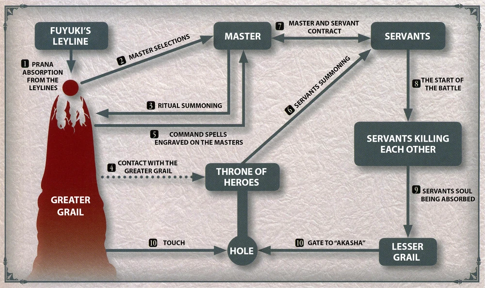

The Murder Death Kill Game, The Holy Grail War, I don't really need to explain what it is, yk the deal, 7 masters, 7 servants battle Royal. A least that's what it's supposed to be.
Established in Fuyuki Japan during the 1800s, throughout all 5 Holy grail wars in that city, the magical community at large has grown to know of it as a competition to win a Holy Grail.
The Holy Grail's true nature is a gate to reach The Root, However, the ritual's very premise is flawed: Only a Spiritual Body like a Servant, not a flesh-and-blood Master, is capable of grasping the Grail and completing the ritual. As such, the final Master, instead of sacrificing their own Servant to perfect the Grail and reach the Root, must keep their Servant alive to claim an energy source that is much weaker, but still capable of granting far-reaching wishes to the final Master/Servant pair.
Overall, the Fuyuki Holy Grail War is a minor event in the World of Magecraft. As a conflict between Magi, the wars' preparation and decision-making are controlled by the Mage's Association. To avoid conflicts of interest, the Associate invites the Holy Church as Arbiters to onboard new Masters and neutrally enforce rules. While many people may perish in the Holy Grail War rituals, the Association only seeks to make sure the media is properly manipulated as to avoid letting it become public. The Fifth Holy Grail War took place in 2004.
|  |
|---|
| The procedure of the Fuyuki Grail War |
The were also the True and False Holy Grail Wars Of America in 2009, organized by The American Government. For unknown reason not much information is left from that event.
Heroic Spirits are Spirits of heroes who achieved great deeds in life, having become objects of worship after their deaths.
Heroic Spirits are beings of a higher existence, becoming categorically closer to Elementals than Wraiths. Differing from how Elementals are "power" granted form using human imagination as a container, they are entirely woven from the ideals of people all throughout and so can be greatly influenced by that vision when summoned.
Heroic Spirits are made up of those who truly existed, those only from legends, and those who were never observed at all. Those who existed had belief of their deeds gathered upon their deaths and were sublimated into beings of higher rank, while those who only existed in myths and legends were born from the gathering of those beliefs even if they didn't exist. Those who were not observed are those who made a contract of some sort with Alaya during their lives and subsequently became Heroic Spirits and Counter Guardians respectively after their deaths as compensation.
Only the World itself can summon the "main body" of Heroic Spirits, so humans can only summon emanations of the heroes, such as through the Servant system. The souls of the emanations, their information, then returns to the main body upon the death of the emanation, and the main body is able to know about the actions of the emanations as records, as if they are reading books.
As beings outside of time, they can be summoned to any era regardless of the notions of past and future, even if summoned to when their human selves have yet to die or when they have yet to be born. The Holy Grail then grants them the necessary information to operate and understand the Era they have been summoned into.
Gods were beings formed by the thoughts of Humans and born into the world without being influenced by the will of the people. They grow stronger the more people worship them, but have been reduced to Divine Spirits since the end of the Age of Gods.
Divine Spirits are much stronger than your average Heroic Spirit although since they are not part of the Throne of Heroes they have never been summoned in a Holy Grail War.
Anyone who studied magecraft knows this, whether from the Mage's Association, the church, or a standalone guy.